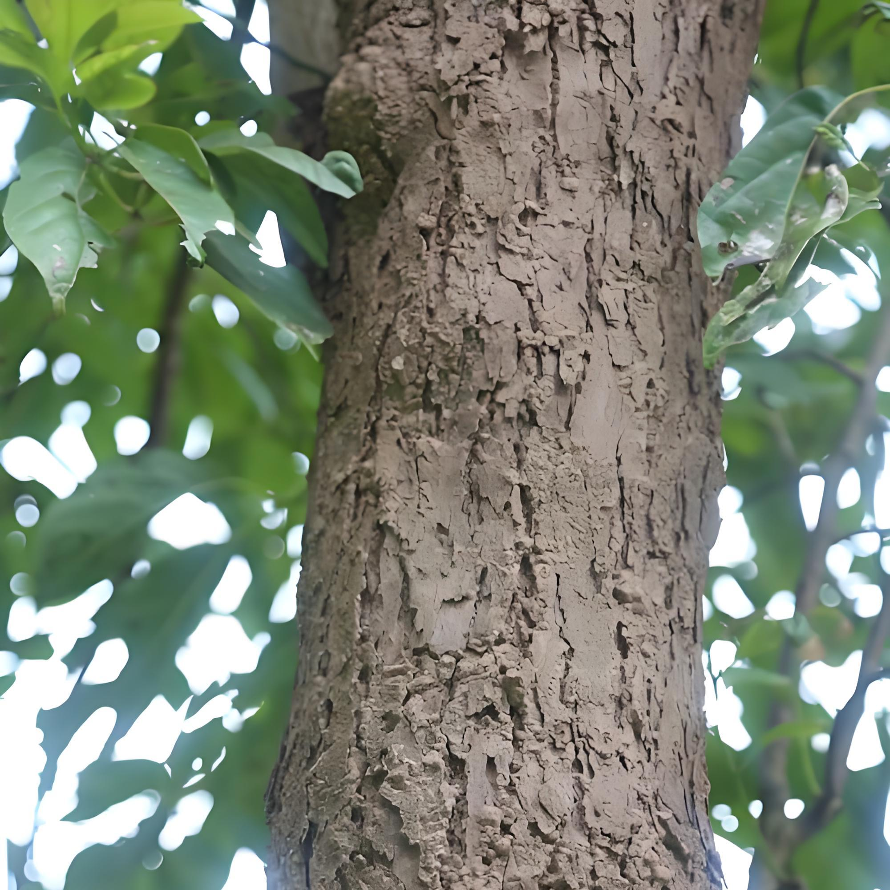
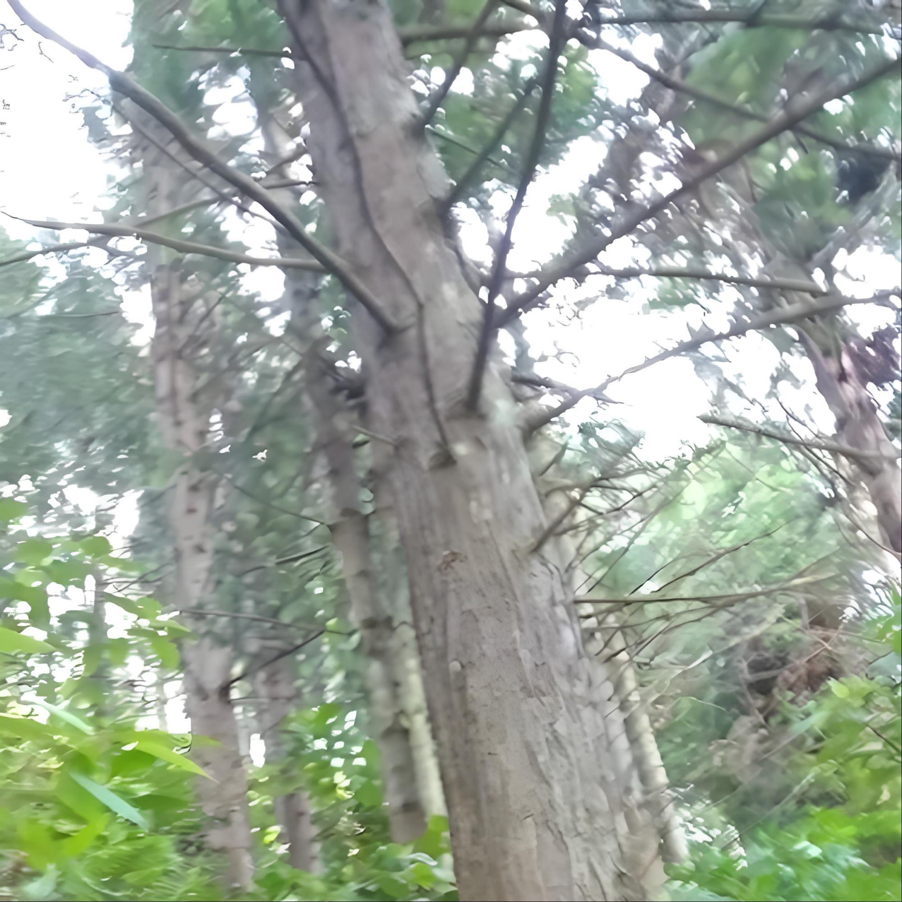
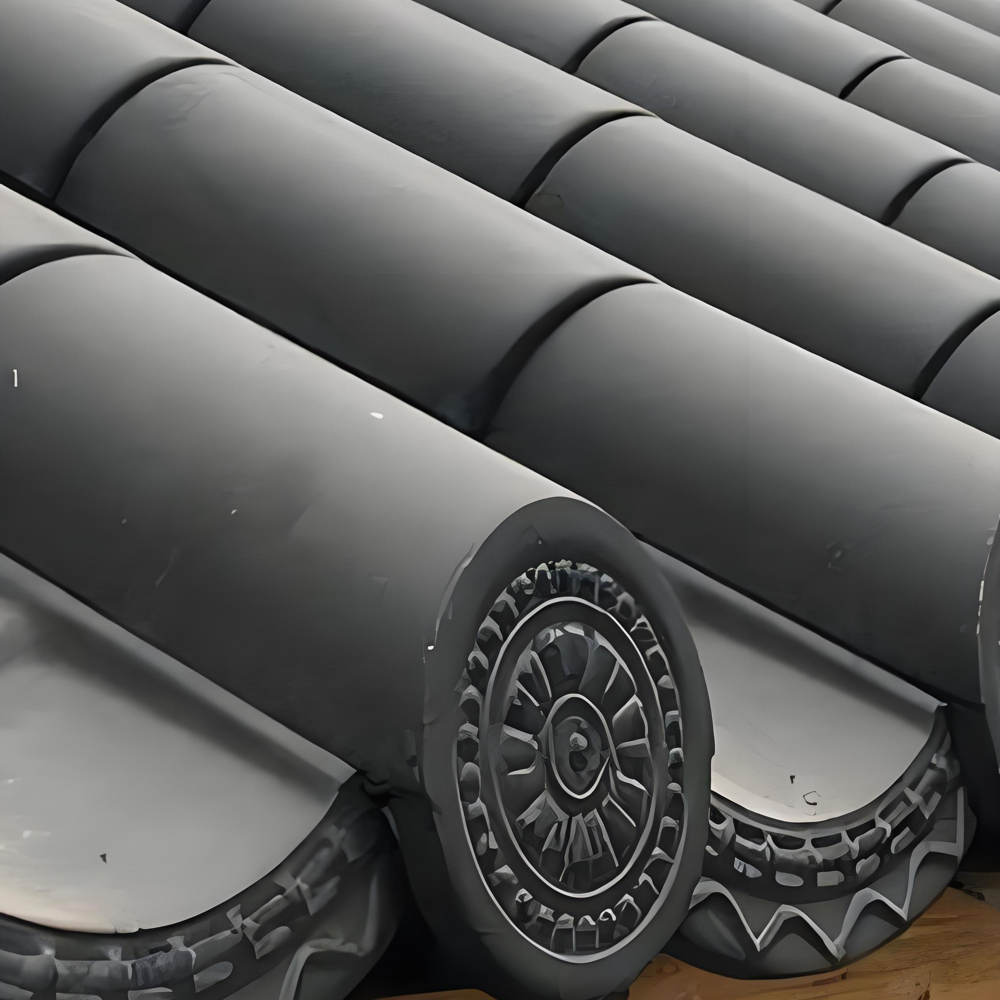
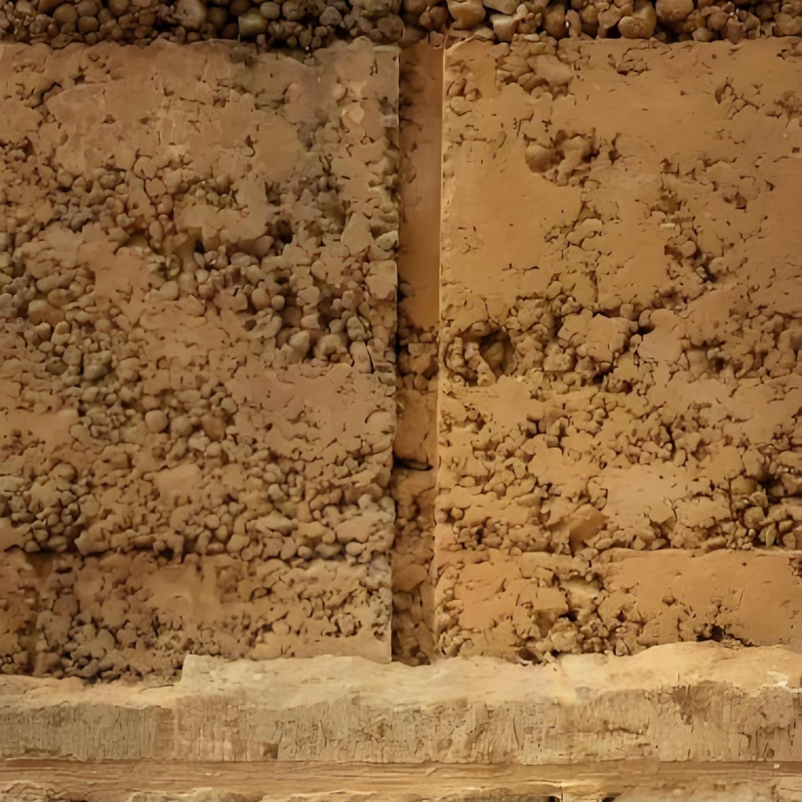

看戏不用麦克风——声学巧思适配市井娱乐
有无藻井声音传播范围对比
古戏台“前台后阁”的布局极具巧思：前台开放面向街巷，结合穹顶藻井的声学构造设计，通过曲面聚音与空间反射原理，在无扩音设备的条件下实现声场均匀覆盖；后台封闭供戏班休息，兼顾演出与生活需求。兴教寺诵经殿的藻井也运用了相同原理，让诵经声清晰庄严，不用大声喊也能传遍殿内。
古戏台“前台后阁”布局示意图
冬暖夏凉不用空调——空间巧思适配滇西气候
古戏台vs现代建筑温度对比
夏季
冬季
穿堂风vs空调对比
古戏台穿堂风
现代空调
就地取材不浪费——选材巧思适配古道环境
四种材料·五大维度综合对比（本地材料优势）
🌲 香樟木
🌲 云杉木
🏺 青瓦
🧱 夯土
古戏台用滇西本地的香樟木、云杉木建造，耐腐耐磨，既省下了茶马古道上高昂的运力成本，也让木料更适配当地潮湿多雨的气候；青瓦、夯土也是山间常见的材料，既贴合了古建“与山水相融”的风貌，又让建造维护的成本降到了普通人家也能负担的程度。兴教寺的条石地基取自附近山岩，赵家大院的夯土墙用的是院外田埂的熟土，这些“就地取材”的细节，不只是工匠的技巧，更是古人把生活需求嵌进自然环境里的智慧，透着“不与天地争利，只与万物共生”的生活哲学。

本地香樟木

本地云杉木

本地青瓦

本地夯土/夯土墙